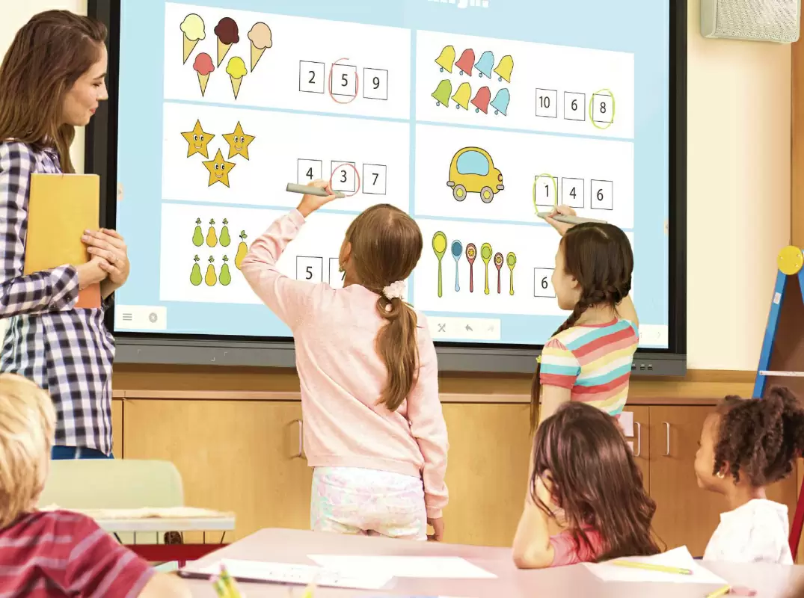
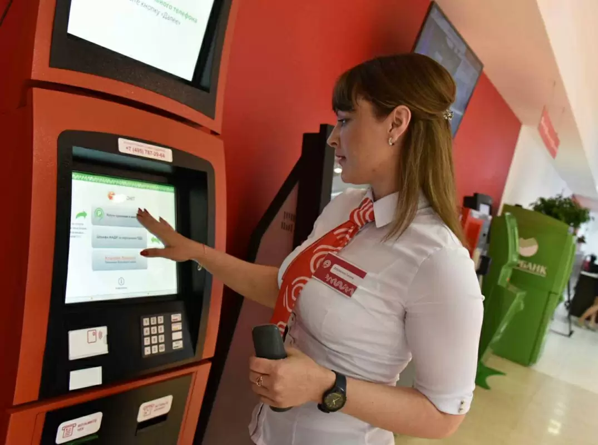

Наша команда работает с интерактивными устройствами уже 10 лет.
За это время получили опыт работы на российском рынке,
и в 2021 году создали торговую марку Geckotouch.
Мы производим интерактивное оборудование и софт
для образования, бизнеса и корпоративных заказчиков.
Сотрудники компаний с помощью интерактивных устройств решают
повседневные рабочие задачи. Устраивают конференции в Скайпе
или Зуме, проводят презентации коллегам, строят графики в Экселе,
рисуют макеты в Фотошопе или делают заметки во время мозгового штурма.
Производительность обеспечивают процессоры Intel 10-го
поколения: i3, i5, i7 или i9 — такие ставят в современные ПК.
Устройства работают на Windows 10, поэтому без проблем поддерживают
привычные программы.

Образование
В школах и университетах интерактивные комплексы заменяют
меловые доски. Преподаватель пишет стилусом на устройстве
или выводит учебные материалы на экран.
Комплексы удовлетворяют рекомендациям Министерства
просвещения РФ в рамках федерального проекта «Цифровая
образовательная среда». Поддерживают любые электронные
обучающие материалы: например, «Российской электронной
школы», «Московской электронной школы», издательства
«Просвещение».
Гос. учреждения
Интерактивные устройства устанавливают, например, в МФЦ,
отделениях налоговой и центрах занятости. С их помощью
люди записываются на прием, встают в электронную очередь,
заполняют и печатают анкеты, используют портал «Госуслуги»
и оценивают работу персонала. Так сотрудники государственных учреждений экономят время.
Устройства адаптированы для людей с нарушениями слуха, зрения
и опорно-двигательного аппарата в рамках программы «Доступная
среда».

Премущества наших дисплеев
50 000 ч
ресурс матрицы интерактивных панелей. Это больше 5 лет непрерывной работы.
Безвоздушная склейка
экрана на всех панелях. Касание на экране отмечается точно в той точке, где экрана касается рука или стилус
500 нит
средняя яркость экрана. Даже в солнечный день люди увидят информацию на экране устройства с пяти метров
20 касаний
одновременно. На интерактивной доске, например, одновременно смогут работать 10 детей.